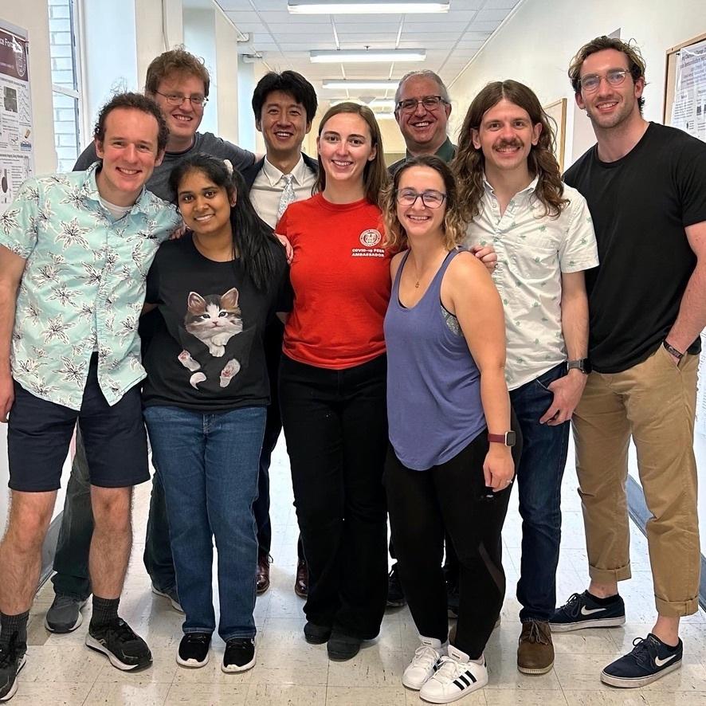

The Marohn group post B-exam for Peter Sun (July 2023). Left to right, upper row: Michael Boucher, Peter Sun, John Marohn, Russell Burgett; lower row: George Du Laney, Emily Hiralal, Virginia McGhee, Rachael Cohn, Chris Petroff.
Current group members
Ph.D. and M.S. students
| Person | Project | Handle | Joined | Undergraduate Institution |
| Rachael Cohn | EFM | rc784 | 2017 | Pennsylvania State University |
| Virginia McGhee | EFM | vem26 | 2019 | Washington and Lee University |
| Russell Burgett | MRFM | rwb273 | 2021 | Iowa State University |
| George Du Laney | MRFM | grd44 | 2022 | Calvin College |
| Emily Hiralal | EFM | eeh82 | 2022 | Northwestern University |
| Aditya Kaipa (M.S.) | EFM | ak2529 | 2023 | BITS Pilani |
| Azriel Finsterer | EFM | af482 | 2024 | Saint Michael’s College |
Undergraduate students
| Person | Project | Handle | Joined | Class | Major |
| Cloe Alvarenga Marchante | EFM | csa76 | 2023 | 2026 | Biological Sciences |
Postdoctoral Fellows
| Person | Project | Handle | Joined | PhD Institution |
| Christopher Petroff | EFM | cap339 | 2022 | University Of Pittsburgh |
In the Project column, MRFM is shorthand for Magnetic Resonance Force Microscopy while EFM is shorthand for Electric Force Microscopy.
Contact information
Email addresses are Handle at cornell dot edu
Shipping address
150 Baker Laboratory
Dept. of Chemistry and Chemical Biology
Cornell University
Ithaca, New York 14853-1301
Offices and phone numbers
150 Baker Laboratory: 607-254-4685
B19 Physical Sciences Building: 607-255-0771
Group alumni
Postdocs
- Jimmy O’Dea [M]
- 2010/12 - 2014/06
- Next position: Congressional Science and Engineering Fellow, Materials Research Society and Optical Society of America; worked on the staff of Senator Brian Schatz of Hawaii
- Present position: Union of Concerned Scientists
- Email: odea.james@gmail.com
- Jonilyn (Longenecker) Yoder [F]
- 2013/01 - 2013/06
- Next/present position: Staff Scientist, MIT Lincoln Laboratories
- Email: jonilyn.yoder@ll.mit.edu
- Lei Chen [M]
- 2011/01 - 2013/06
- Next/present position: Staff Scientist, State Key Laboratory of Functional Materials for Informatics, Shanghai Institute of Microsystem and Information Technology, Chinese Academy of Sciences (Shanghai, China)
- Email: leichen@mail.sim.ac.cn
- SangGap Lee [M]
- 2007/11 - 2010/11
- Next/present position: Staff Scientist, Division of Materials Science, Korea Basic Science Institute (Daejeon, Korea)
- Email: sgL757@kbsi.re.kr
- James G. Kempf [M]
- 2000/11 - 2001/12
- Next position: Dept. of Chemistry and Chemical Biology, Rensselaer Polytechnic Institute
- Present position: Staff Scientist, Brucker Instruments (Billerica, MA)
- Email: James.Kempf@bruker.com
Visiting scientists
- Dr. Chris Klug [M]
- 2020/06 - 2020/09
- Research Physicist, Materials Magnetic Resonance Section, Chemistry Division, U.S. Naval Research Laboratory (Washington, D.C.)
- Email: christopher.klug@nrl.navy.mil
- LinkedIn: christopher-klug-7a7ba834
- Dr. Massimo Ghidini [M]
- 2005/11/04 - 2005/11/11
- Dept. of Physics, University of Parma, Italy
- Email: massimo.ghidini@unipr.it
- Prof. Lee Harrell [M]
- 2005/08 - 2005/12 and nearly every year for 1 to 2 weeks since then
- Professor, U.S. Military Academy (West Point, NY)
- Email: lee.harrell@westpoint.edu
- LinkedIn: lee-harrell-a163053a
Ph.D. students
- Peter Sun [M]
- 2016/12 - 2023/08
- Ph.D.: Dept. of Chemistry and Chemical Biology
- Thesis title: Rapid Signal Modeling via Directed Acyclic Graphs and Magnet Tip Nanofabrication for Magnetic Resonance Force Microscopy
- Subsequent/current position: Postdoctoral fellow, Brookhaven National Lab (Upton, NY)
- Michael C. Boucher [M]
- 2014/12 - 2023/03
- Ph.D.: Dept. of Chemistry and Chemical Biology
- Thesis title: Mitigating Signal Loss in Force Gradient Detection of Electron Spin Resonance
- Subsequent/current position: Postdoctoral fellow, U.S. Naval Research Laboratory (Washington, DC)
- Syed Ali Moeed Tirmzi [M]
- 2014/12 - 2020/02
- Ph.D.: Dept. of Chemistry and Chemical Biology
- Thesis title: Photoconductivity Dynamics in Lead Halide Perovskites Probed by Scanning Probe Microscopy
- Subsequent/current position: TD Etch Module Engineer, Intel Corporation (Portland, OR)
- LinkedIn: alimoeedtirmzi
- Hoang L. Nguyen [M]
- 2012/12 - 2018/05
- Ph.D.: Dept. of Chemistry and Chemical Biology
- Thesis title: Image Reconstruction Development and Signal-to-Noise Analysis for Nanometer-Scale Magnetic Resonance Imaging
- Best-poster Award, International Electron Paramagnetic Resonance Society (IES), 20th International Society of Magnetic Resonance Meeting and Rocky Mountain Conference on Electron Paramagnetic Resonance Spectroscopy; Quebec City, Canada; July 23 - 28, 2017. Hoang’s poster was one of two electron paramagnetic resonance related posters to be honored with an award at the field’s premier biennial international conference.
- Subsequent position: Postdoctoral Fellow, Prof. Randall Goldsmith labortory, University of Wisconsin, Madison
- Current position: Assistant Professor, Washburn University (Topeka, KS)
- LinkedIn: hoang-nguyen-washburn
- Corinne (Kingsley) Isaac [F]
- 2012/12 - 2018/02
- Ph.D.: Dept. of Chemistry and Chemical Biology
- Thesis title: Harnessing Electron Spin Labels for Single Molecule Magnetic Resonance Imaging
- Invited Talk, Analytical Division Symposium, 254th American Chemical Society National Meeting; Washington, DC; August 20 - 24, 2017
- Summer Fellowship, American Chemical Society, Analytical Division, 2016
- Wachter Memorial Prize in Physical Chemistry, Dept. of Chemistry and Chemical Biology, 2016
- Bayer Teaching Excellence Award, Dept. of Chemistry and Chemical Biology, 2013
- Subsequent/current position: Chemical and Surface Measurement Scientist, Corning Incorporated (Corning, NY)
- LinkedIn: corinne-isaac
- Sarah Nathan [F]
- 2012/12 - 2017/12 (from 2015/08 - 2017/12, Sarah worked under the supervision of Assistant Professor Justin Wilson)
- Ph.D.: Dept. of Chemistry and Chemical Biology
- Thesis title: (1) A Proof-of-concept Experiment to Investigate Fast Charging Transients by Scanning Kelvin Probe Microscopy and (2) Studies on Bridged Ruthenium Complexes
- U.S.National Science Foundation Graduate Research Fellowship
- Subsequent/current position: Research Scientist II at Ecolectro, Inc.(Ithaca, NY)
- LinkedIn: sarahrnathan
- Pamela T. Nasr [F]
- 2011/12 - 2016/08
- Ph.D.: Dept. of Chemistry and Chemical Biology
- Thesis title: High Sensitivity Magnet-Tipped Cantilever and Micrometer-Scale Coplanar Waveguides to Enable Nanoscale Magnetic Resonance Imaging (thesis completed 2020/08)
- Subsequent position: Healthcare Consultant Analyst, PA Consulting Group (Boston, MA)
- Current position: Analyst, PatientPing (Boston, MA)
- LinkedIn: pamelatnasr
- Ryan Dwyer [M]
- 2011/12 - 2017/08
- Ph.D.: Dept. of Chemistry and Chemical Biology
- Thesis title: Probing Charge Motion in Next Generation Semiconductors with Scanned Probe Microscopy
- Subsequent position: Chemistry Instructor, Gettysburg College (Gettysburg, Pennsylvania)
- Current position: Assistant Professor, Dept. of Chemistry and Biochemistry, University of Mount Union (Alliance, OH)
- LinkedIn: ryanpdwyer
- Louisa (Brown) Smieska [F]
- 2009/12 - 2015/08
- Ph.D.: Dept. of Chemistry and Chemical Biology
- Thesis title: Microscopic Studies of the Fate of Charges in Organic Semiconductors: Scanning Kelvin Probe Measurements of Charge Trapping, Transport, and Electric Fields in p- and n-type Devices
- U.S. National Science Foundation Graduate Research Fellowship
- Student Talk Award, 2014 Materials Research Society (MRS) Fall Meeting and Exhibit; Boston, Massachusetts; November 30 - December 5, 2014
- Subsequent position: Postdoctoral Fellow, Cornell High Energy Synchrotron Source (CHESS); Andrew W. Mellon Foundation Postdoctoral Fellowship, The Metropolitan Museum of Art (New York, NY)
- Current position: Research Associate, Cornell High Energy Synchrotron Source (CHESS)
- LinkedIn: louisasmieska
- Jonilyn (Longenecker) Yoder [F]
- 2007/12 - 2013/01
- Ph.D.: Dept. of Chemistry and Chemical Biology
- Thesis title: High-Gradient Nanomagnet-on-Cantilever Fabrication for Scanned Probe Detection of Magnetic Resonance
- Nellie Yeh-Poh Lin Whetten Memorial Award, given by the Cornell Nanoscale Facility (CNF) to an “outstanding female graduate student working at the CNF who displays the highest level of enthusiasm and commitment to professionalism”, 2011
- One of 13 graduate students chosen by the U.S. National Nanotechnology Infrastructure Network (NNIN) to represent the United States at the two-week-long 2011 International Winter School for Graduate Students on the Science and Technology of Nanofabrication; Bangalore, India; January, 2011
- Subsequent position: Postdoctoral Fellow, Prof. John Marohn laboratory, Cornell University; Postdoctoral Fellow, MIT Lincoln Laboratories
- Current position: Technical Staff, MIT Lincoln Laboratories
- LinkedIn: jonilyn-yoder-0835373b
- Nikolas Hoepker [M]
- 2007/05 - 2012/08
- Ph.D.: Dept. of Physics (Thesis Chair: Jeevak Parpia)
- Thesis title: Fluctuations Near Thin Films of Polymers, Organic Photovoltaics, and Organic Semiconductors Probed by Electric Force Microscopy
- 62nd Lindau Nobel Laureate Meeting (dedicated to Physics); Lindau, Germany; July 1 - 6, 2012
- Subsequent/current position: Audiological Engineer, Phonak (Zurich, Switzerland)
- LinkedIn: nikolas-hoepker-b9657155
- Eric Moore [M]
- 2005/12 - 2011/09
- Ph.D.: Dept. of Chemistry and Chemical Biology
- Thesis title: 1. Mechanical Detection of Electron Spin Resonance from Nitroxide Spin Probes, 2. Ultrasensitive Cantilever Torque Magnetometry of Magnetization Switching in Individual Nickel Nanorods
- Wentink best-Ph.D.-thesis award, Dept. of Chemistry and Chemical Biology, 2011
- Subsequent position: Postdoctoral Fellow, Dr. Rob Tycko laboratory, National Institutes of Health (Washington, DC); Director of Instrumentation, Lehigh University
- Current position: Applications Engineer, Bruker BioSpin (Bethlehem, Pennsylvania)
- LinkedIn: eric-moore-18292032
- Justin Luria [M]
- 2006/12 - 2011/08
- Ph.D.: Dept. of Chemistry and Chemical Biology
- Subsequent positions: Engineer, Cree (Durham, NC); Dept. of Energy Sunshot Postdoctoral Fellow, Prof. Bryan D. Huey laboratory, University of Connecticut
- Current position: Senior Electrical Engineer, Raytheon (Andover, Massachusetts)
- LinkedIn: justin-luria-4ba092103
- Vladimir Pozdin [M]
- 2009/08 - 2011/07 (co-advised with George Malliaras, Dept. of Materials Science and Engineering)
- Ph.D.: Dept. of Materials Science and Engineering
- Thesis title:
- Subsequent position: Postdoctoral Fellow, Prof. Anvar Zakhidov laboratory, Alan G. MacDiarmid Nanotech Institute, University of Texas at Dallas (Dallas, Texas)
- Current position: Assistant Professor, Florida International University
- LinkedIn: vladimirpozdin
- Steven Hickman [M]
- 2004/12 - 2009/10
- Ph.D.: Dept. of Chemistry and Chemical Biology
- Thesis title: Batch Fabrication of Cantilevered Magnetic Nanorods on Attonewton-Sensitivity Silicon Oscillators for Magnetic Resonance Force Microscopy
- Best Student Talk, ANZMAG Biennial Conference; Queensland, Australia; December 6 - 11, 2008
- Best Student Talk, NEMS/MEMS division, American Vacuum Society 55th International Symposium and Exhibition; Boston, Massachusetts; October 19 - 24, 2008
- Chair’s Travel Grant, Gordon Conference on Nanostructure Fabrication; Tilton School, Tilton, New Hampshire; July 13 - 18, 2008
- Winner of the American Vacuum Society “Art Zone” Competition for best electron microscope image; American Vacuum Society 54th International Symposium and Exhibition; Seattle, Washington; October 14 - 19, 2007
- Subsequent positions: Staff, Harvard Nanofabrication Facility; Process Engineer, Hummingbird Scientific (Lacey, WA)
- Current position: Lead MEMS engineer, Magic Leap (Seattle, WA)
- LinkedIn: stevenhickman
- Showkat (Monica) Yazdanian [F]
- 2004/12 - 2009/07
- Ph.D.: Dept. of Chemistry and Chemical Biology
- Thesis title: Scanned Probe Microscopy Studies of Thin Organic Films Using Cantilever Frequency Noise
- Best-Poster Award, Materials Research Society Spring Meeting; San Francisco, California; March 24 - 28, 2008
- Subsequent positions: Instructor, Dept. of Physics, University of Guelph; Director of Research and Development, Sargent Group, University of Toronto; Director, The Forge Startup Incubator, McMaster University
- Current position: CEO and co-founder, ToeFX Incorporated
- LinkedIn: monika-yazdanian-546a9762
- Michael Jaquith [M]
- 2003/12 - 2009/01
- Ph.D.: Dept. of Chemistry and Chemical Biology
- Thesis title: The Kinetics of Charge Trapping in Polycrystalline Pentacene and Ion Migration in Light Emitting Electrochemical Cells Studied by Time- and Temperature-Resolved Electric Force Microscopy
- Subsequent position: Process Technology Division, Intel Corporation(Portland, OR)
- Current position: Sales consultant, speaker, and book writer
- LinkedIn: michael-jaquith-phd
- Jahan Dawlaty [M]
- 2001/12 - 2008/06 (with Prof. Farhan Rana, Cornell Dept. of Electrical and Computer Engineering)
- Ph.D.: Dept. of Chemistry and Chemical Biology
- Thesis title: Optical Interactions and Ultrafast Carrier Dynamics in Graphene
- Subsequent position: Postdoctoral Fellow, Graham Fleming laboratory, University of California, Berkeley
- Current position: Associate Professor, Dept. of Chemistry, University of Southern California
- LinkedIn: jahan-dawlaty-088bb24a
- Seppe Kuehn [M]
- 2001/12 - 2007/05
- Ph.D.: Dept. of Chemistry and Chemical Biology
- Thesis title: Force Gradient Detected Magnetic Resonance and the Origins of Noncontact Friction
- Wentink best-Ph.D.-thesis award, Dept. of Chemistry and Chemical Biology, 2005
- Travel Scholarship, Frontiers in Live Cell Imaging, National Institutes of Health; Bethesda, Maryland; April 19 - 21, 2006
- Travel Scholarship, European Magnetic Resonance EUROMAR Meeting; Veldhoven, The Netherlands; July 3 - 8, 2005
- Summer Fellowship, American Chemical Society, Analytical Division, 2004
- Subsequent positions: Postdoctoral Fellow, Prof. Stan Leibler laboratory, Rockefeller University; Assistant Professor, Dept. of Physics, University of Illinois, Urbana-Champaign
- Current position: Assistant Professor of Ecology and Evolution, University of Chicago
- Web: KuehnLab
- Neil E. Jenkins [M]
- 2000/12 - 2006/12
- Ph.D.: Dept. of Chemistry and Chemical Biology
- Thesis title: Expanding the Limits of Magnetic Resonance Force Microscopy
- Stephen and Margery Russel Award for Distinguished Teaching, College of Arts and Sciences, 2002
- IBM Graduate Teaching Award, Dept. of Chemistry and Chemical Biology, 2001
- Subsequent positions: Analyst, Center for Naval Analysis Corporation; National Defense Analyst, Pennsylvania State University Applied Research Laboratory
- Current position: Chief Analytic Officer, Cyber Threat Alliance (Gaithersburg, Maryland)
- LinkedIn: neil-jenkins-125386143
- Tse Nga (Tina) Ng [F]
- 2000/12 - 2006/01
- Ph.D.: Dept. of Chemistry and Chemical Biology
- Thesis title: Developments in Force Detection: Integrated Cantilever Magnetometry and Electric Force Microscopy of Organic Semiconductors
- Subsequent position: Postdoctoral Fellow with Dr. Robert Street, Palo Alto Research Center
- Current position: Associate Professor, Dept. of Electrical and Computer Engineering, University of California, San Diego
- LinkedIn: tse-nga-tina-ng-101bb25
- Erik M. Muller [M]
- 2000/08 - 2005/07
- Ph.D.: Dept. of Physics (Thesis Chair: Dan Ralph)
- Thesis title: Electric Force Microscopy of Charge Trapping in Thin-Film Pentacene
- Subsequent position: Postdoctoral Fellow with Drs. Peter Sutter and Robert Hwang, Brookhaven National Laboratory; Research Staff, Brookhaven National Laboratory
- Current position: Research Associate Professor, Dept. of Materials Science, Stony Brook University
- LinkedIn erik-muller-3626345
- Sean R. Garner [M]
- 2000/06 - 2005/07
- Ph.D.: Dept. of Physics (Thesis Chair: Paul McEuen)
- Thesis title: Force Gradient Detection of Nuclear Magnetic Resonance
- Highlighted Talk, 45th Experimental Nuclear Magnetic Resonance Conference, 2004
- Subsequent position: Postdoctoral Fellow, Prof. Lene Hau laboratory, Dept. of Physics, Harvard University; Vice President and Director of the Hardware Systems Laboratory, Palo Alto Research Center
- Current position: President, Bright Ceramic Technologies (Palo Alto, CA)
- LinkedIn sean-garner-04676b21
- William R. Silveira [M]
- 1999/12 - 2005/06
- Ph.D.: Dept. of Chemistry and Chemical Biology
- Thesis title: Microscopic View of Charge Injection in a Model Organic Semiconductor
- Wachter Memorial Prize in Physical Chemistry, Dept. of Chemistry and Chemical Biology, 2002
- Summer Fellowship, American Chemical Society, Analytical Division, 2003
- Subsequent positions: M.D. program, Harvard Medical School; Intern, Radiology, University of California, San Francisco
- Current position: Radiation Oncologist, Community Regional Medical Center (Fresno, CA)
- LinkedIn: williamsilveira
M.S. students
- Shanza Riaz [F]
- 2021/12 - 2023/07
- M.S.: Dept. of Chemical Engineering
- Subsequent/current position: Research Scientist, Pacific Northwest National Lab (Richland, WA)
- José Javier Fuentes Rivera [M]
- 2020/07 - 2021/12
- M.S.: Dept. of Chemistry and Chemical Biology
- Subsequent/current position: Officer Candidate School, US Navy (Newport, RI)
- Sai Prashant [M]
- 2019/12 - 2021/07
- M.S.: Dept. of Materials Science and Engineering
- Subsequent/current position: Product Engineer at LAM Research (Fremont, CA)
- Elizabeth (Curley) Hinds [F]
- 2013/12 - 2017/07
- M.S.: Dept. of Chemistry and Chemical Biology
- Subsequent/current position: Chemistry Laboratory Specialist, Metropolitan State University (Saint Paul, MN)
- LinkedIn: elizabeth-hinds-chemist
- Christine Gleave [F]
- 2011/12 - 2014/06
- M.S.: Dept. of Chemistry and Chemical Biology
- Subsequent position: High School Science Teacher, Richards Career Academy (Chicago, IL)
- Current position: Research Compliance Associate, Geisinger (Lewisburg, PA)
- LinkedIn: cmgleave
- Sarah J. Wright [F]
- 2006/12 - 2009/07
- M.S.: Dept. of Chemistry and Chemical Biology
- Subsequent position: M.D. program, University of Miami (Miami, FL)
Research associates
- Mr. Boyan Penkov [M]
- 2007/01 - 2008/05
- Nanofabrication Consultant and Research Associate
- Subsequent position: Ph.D. program, University of Washington, Seattle; Fabrication Engineer, Phoebus Optoelectronics
- Current position: Ph.D. program, Columbia University
- LinkedIn: boyanpenkov
- Dr. Jay VanDelden [M]
- 2007/09 - 2008/06
- Nanofabrication Consultant and Research Associate
- Current position: President/Senior Scientist, Eigenphase Technologies (Trumansburg, NY)
- LinkedIn: jay-vandelden-6175a913b
Undergraduate students
Cornell students
- Leon Lee [M]
- 2019 - 2023
- B.S., Chemical Engineering
- Subsequent/current position: Process Automation Engineer with Automation and Control Specialists (Malvern, PA)
- Alex Siegenthaler [M]
- 2020 - 2022
- B.S., Chemistry and Chemical Biology
- Jacelyn Greenwald [F]
- 2017 - 2018
- B.A., Chemistry and Chemical Biology
- Subsequent position: Research Assistant, Tisch MS Research Center (New York, NY)
- Current position: M.D. program, Ohio State University
- LinkedIn: jacelyn-greenwald-4b4192b0
- Samuel Young [M]
- 2012 - 2013 and 2015 - 2016
- B.S., Chemical and Biomolecular Engineering
- Subsequent/current position: Ph.D. program, Chemical Engineering, University of Michigan, Ann Arbor
- LinkedIn: samueldyoung1
- Jazmin Aguilar-Romero [F]
- Summer 2015
- B.A., Chemistry and Chemical Biology
- Subsequent/current position: Ph.D. program, Dept. of Chemistry, University of Illinois, Urbana-Champaign
- Web: UIUC graduate school
- Xueying (Li) Quinn [F]
- 2013 - 2015
- B.A., Chemistry and Chemical Biology
- Subsequent position: Scientist Intern, GSK (King of Prussia, PA)
- Current position: Ph.D. program, Materials Science and Engineering, University of California, San Diego
- LinkedIn: xueyingli0318
- Alexander Senko [M]
- 2010 - 2013
- B.S., Materials Science and Engineering
- Subsequent position: Ph.D. with Polina Anikeeva, Dept. of Materials Science, Massachusetts Institute of Technology
- Current position: Data Scientist, Teladoc Health (Cambridge, MA)
- LinkedIn: asenko
- Demetra Perry [F]
- 2011 - 2012
- B.A., Chemistry and Chemical Biology
- Subsequent position: M.S. program, Food Science and Sensory Science, Penn State Univ.
- Current position: PhD Candidate studying wine chemistry at Cornell University
- LinkedIn: demiperry
- Andrew Jacobs [M]
- 2009 - 2011
- B.S., Materials Science and Engineering
- Subsequent position: Ph.D program, University of California, Santa Barbara
- Current position: Owner, President at Avalon Conservation LLC
- LinkedIn: andrew-jacobs-199239a3
- Robert Bruce [M]
- 2009 - 2010
- B.A., Chemistry and Chemical Biology
- Subsequent position: Ph.D. program in Chemistry, University of North Carolina, Chapel Hill
- Current position: Research Scientist, Virginia Tech
- LinkedIn: robert-bruce-4611a795
- Eric VanWerven [M]
- 2008 - 2009
- B.S., Mechanical Engineering
- Subsequent position: Ph.D. program in Mechanical Engineering, University of Washington, Seattle
- Current position: President/Engineer at Newell Corporation (Everett, WA)
- LinkedIn: eric-vanwerven-b63a6262
- Boyan Penkov [M]
- 2005 - 2008
- B.S., Electrical and Computer Engineering
- Subsequent positions: Nanofabrication Consultant and Research Associate, John Marohn group, Cornell University; Ph.D. program, University of Washington, Seattle; Fabrication Engineer, Phoebus Optoelectronics
- Current position: Ph.D. program, Columbia University
- LinkedIn: boyanpenkov
- Gustavo Bitdinger [M]
- 2004 - 2005
- B.S., Electrical and Computer Engineering
- Subsequent positions: AmeriCorps National Civilian Community Corps; M.S., Management Science and Engineering, Stanford University
- Current position: Director of Product Management, Docusign
- LinkedIn: gustavobitdinger
- Brian To [M]
- 2002 - 2003
- Lauren P. DeFlores [F]
- 2000 - 2002
- B.A., Chemistry and Chemical Biology
- Undergraduate Research Award, American Microchemical Society, 2001
- Subsequent position: Ph.D. with Andre Tokmakoff, Dept. of Chemistry, Massachusetts Institute of Technology
- Current position: SHERLOC Instrument Systems Engineer for Mars 2020, NASA Jet Propulsion Laboratory (Pasadena, CA)
- LinkedIn: laurendeflores
- Jack Allen [M]
- 2000 - 2001
- B.A., Chemistry and Chemical Biology
- Subsequent position: Ph.D. with George McLendon, Dept. of Chemistry, Princeton University
- Current position: Clinical Scientist, Ultragenyx Pharmaceutical Inc.
- LinkedIn: jack-allen-59a1554
- Sarunya Bangsaruntip [F]
- 1999 - 2000
- B.A., Chemistry and Chemical Biology
- Leo and Bernie Mandelkern Prize, Dept. of Chemistry and Chemical Biology, 2000
- Subsequent position: Ph.D. with Hongjie Dai, Dept. of Chemistry, Stanford University
- Current position: Research Staff, IBM Watson Research Center (Yorktown Heights, NY)
- LinkedIn: sarunya-bangsaruntip-36440214
Students from elsewhere
- Andrew Doyle [M], Clarkson University; CNF, summer 2011
- Rukan Shao [M], Penn State; CNF, summer 2010
- Rebecca Lee [F], California State, Los Angeles; CNF, spring 2008
- True Merrill [M], Spring Hill College; CNF, summer 2007
- Anastasia Midkiff [F], George Mason Univ.; CNF, summer 2004
- Daniel Turner [M], Concordia College; CCMR, summer 2003
- Cara Govednik [F], University of Texas at Austin; CNF, summer 2002
- Jenna Harang [F], University of Iowa; CCMR, summer 2002